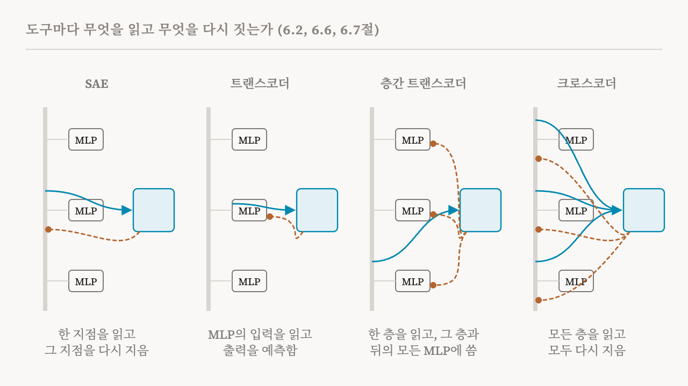
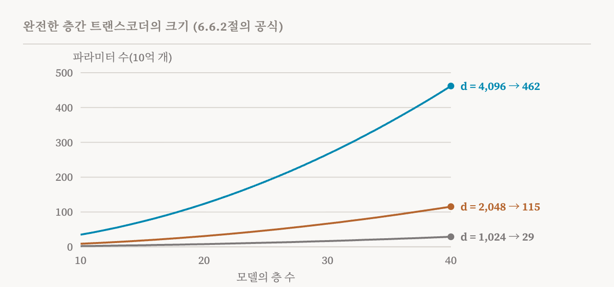

10편부터 12편까지의 희소 오토인코더는 스냅사진을 찍습니다. 한 층의 한 자리에서 활성값을 읽고 그것을 분해합니다. 하지만 모델은 정보를 수십 개의 층 위로 넘기며 계산하고, 6편의 회로는 바로 그 흐름에 관한 것입니다. 이번 편은 여러 층에 걸쳐 특징을 뽑아내는 세 도구를 다루는 이 책의 6.6절과 6.7절(41–47쪽)을 다룹니다. 지금까지 가운데 가장 기술적인 편이고, 17편의 회로 추적 방법으로 가장 곧장 이어지는 편이기도 합니다.
트랜스코더: MLP 자체를 설명하기
표준 SAE는 활성값을 설명합니다. 그 활성값을 만든 계산, 예를 들어 MLP가 입력을 출력으로 바꾸려고 무엇을 하는지는 설명하지 않습니다. 트랜스코더(transcoder)는 딕셔너리 학습을 그 사상에 적용합니다.
트랜스코더는 SAE와 비슷하게 작동하지만 한 가지가 다릅니다. 인코더는 비선형 함수를 거치기 전의 MLP 입력을 읽어 희소한 특징 활성값으로 바꿉니다. 그다음 디코더는 그 특징들로부터, 비선형 함수를 거친 뒤의 MLP 출력을 예측합니다. 학습은 예측한 출력과 실제 출력 사이의 오차에 희소성 벌점을 더한 값을 줄입니다. 그래서 트랜스코더가 배우는 특징은 변환의 특징입니다. 각 특징은 사실상 '입력에 이런 패턴이 있으면 MLP가 출력에 저것을 더한다'고 말합니다.
이 책의 조언은 이렇습니다. 고정된 활성값을 분해하는 SAE는 잔차 스트림에는 충분한 경우가 많습니다. 반면 MLP 층을 분석하는 데는 트랜스코더가 꼭 필요합니다. MLP의 입력에서 특징이 어떻게 생겨나는지 추적하기 때문입니다. 2025년의 한 연구는 해석 가능성 면에서 트랜스코더가 SAE보다 나은 결과를 보였다고 보고했습니다.
층간 트랜스코더
층간 트랜스코더(cross-layer transcoder, CLT)는 이 아이디어를 모델의 깊이 전체로 넓힙니다. 층마다 11편의 JumpReLU 활성화를 써서 잔차 스트림에서 희소한 특징을 읽습니다. 그다음 각 특징은 자기 층의 MLP 출력뿐 아니라, 그 뒤 모든 층의 MLP 출력에도 층마다 따로 있는 디코더 벡터를 통해 씁니다. 어느 층에서든 재구성된 MLP 출력은, 그 층과 앞선 층들의 모든 특징이 거기에 쓴 것의 합입니다. 모든 층을 함께 학습시킵니다.
왜 이렇게까지 할까요? 실제 모델에서는 5층에서 계산된 특징이 20층에서도 여전히 필요할 수 있기 때문입니다. 층별 도구를 쓰면 같은 정보를, 그것이 거쳐 가는 층마다 새로운 특징으로 다시 찾아야 합니다. CLT는 특징이 뒤쪽 층에 곧장 닿게 해서, 회로가 같은 것을 거듭 다시 담지 않아도 되게 합니다.
대체 모델
이 책이 CLT에서 끌어내는 핵심 아이디어는 대체 모델(replacement model)입니다. 원래 모델의 모든 MLP 층을 CLT의 재구성으로 바꿔 놓은 버전입니다. 이것을 실행하려면 층마다 CLT 특징을 계산하고, 각 MLP의 출력을 그 층과 앞선 층의 특징으로 지은 재구성으로 바꾸고, 어텐션 층은 그대로 둡니다.
특정한 프롬프트 하나를 연구할 때는 한 걸음 더 나아가 국소 대체 모델(local replacement model)을 만듭니다. 그 프롬프트에 대한 원래 모델의 실행에서 어텐션 패턴과 정규화 통계를 얼려 두고, CLT가 재구성하지 못한 부분을 보정하는 항을 층마다 더합니다. 이런 조건에서 국소 대체 모델은 그 프롬프트에 대해 원래 모델의 활성값과 정확히 일치하면서도, 그 활성값을 해석 가능한 CLT 특징으로 나타냅니다.
보정 없이 MLP를 통째로 바꾸면 일치도가 훨씬 떨어집니다. 이 방법을 처음 내놓은 2025년 연구에서, 비교적 작은 18층 모델의 경우 대체 모델이 가장 그럴듯하다고 본 다음 토큰은 표준 텍스트 데이터셋의 프롬프트 가운데 약 50%에서만 원래 모델과 같았습니다.

충실도에 대한 이 책의 경고
여기서 충실도(fidelity)는 대체 모델이 원래 모델을 얼마나 충실하게 재현하는지를 뜻합니다. 이 책은 그 단서들을 따로 상자에 정리하는데, CLT 기반 결과가 많은 주목을 받아 온 만큼 꼼꼼히 따라갈 만합니다.
보고된 충실도 뒤의 조건: 결과는 주로 장난감 모델이나 작은 모델에서 나왔고, Llama나 Qwen 같은 다른 계열이나 700억 파라미터 같은 규모에서도 성립하는지는 거의 탐구되지 않았습니다. 충실도는 CLT의 학습 데이터와 비슷한 짧은 시퀀스에서 쟀고, 분포 변화 아래에서 잰 것이 아닙니다. 그리고 대표 수치는 가장 그럴듯한 토큰 하나의 일치율인데, 상위 다섯 토큰의 일치율이나 확률 분포 전체의 차이 같은 더 부드러운 지표는 다른 모습을 보여 줄 수 있습니다.
정확한 국소 일치 뒤의 조건: CLT는 어텐션을 전혀 모델링하지 않으므로 어텐션 패턴을 원래 실행에서 얼려 두어야 합니다. 정규화 통계는 원래 모델에서 복사해 와야 합니다. 보정 항을 층마다 더해야 합니다. 이것들이 없으면 정확한 일치는 무너집니다.
충실도에 영향을 주는 요인: CLT가 클수록 재구성이 좋아지고 특징도 더 해석하기 쉬워지는 것으로 보이지만, 규모에 대한 체계적인 연구는 적습니다. 가운데 층은 보통 입력에 강하게 묶인 앞쪽 층이나 출력에 강하게 묶인 뒤쪽 층보다 재구성이 잘 됩니다. 그리고 충실도는 사실 회상이나 문법에서는 높습니다. 복잡한 추론이나 산술에서는 낮습니다. 그런 과제에서는 MLP의 계산이 희소한 선형 특징으로 근사하기에는 너무 복잡할 수 있습니다.
이 책은 이것이 CLT가 쓸모없다는 뜻은 아니라고 강조합니다. CLT 기반 회로에서 강한 결론을 끌어내기 전에, 해당 모델과 과제에서 충실도를 확인해야 한다는 뜻입니다.
CLT가 회로를 쉽게 만드는 이유
CLT는 회로 분석에 두 가지 이점을 줍니다. 첫째, 층을 넘나드는 특징 사이의 직접적인 상호작용을 보여 줍니다. 한 층의 특징은 뒤쪽 층 특징들의 입력에 기여함으로써 그 특징들에 영향을 줍니다. 둘째, MLP를 바꾸고 어텐션과 정규화를 얼리고 나면 남은 계산이 대략 선형이 됩니다. 그래서 귀속(attribution)을 원칙에 맞게 할 수 있습니다. 각 특징의 활성값을, 그 문턱값까지, 앞선 특징들에서 도착하는 기여의 합으로 쓸 수 있습니다. 이것이 어떻게 귀속 그래프로 바뀌는지는 17편에서 봅니다.
하지만 이 책은 이것이 기대는 가정들을 나열합니다. 어텐션을 얼리면 어텐션을, 입력에 따라 달라지는 계산이 아니라 정보의 고정된 경로로 다루게 됩니다. 그래서 CLT 회로는 주어진 어텐션 패턴 아래에서의 모델 계산을 기술할 뿐, 그 패턴 자체를 설명하지는 않습니다. 정규화를 저장해 두면 비선형성 하나가 사라지지만, 어떤 개입이 실제 모델에서라면 그 정규화 계수를 바꿨을 경우에는, 저장해 둔 버전이 실제로 일어날 일과 더 이상 맞지 않습니다. 그리고 이 접근 전체가 MLP의 계산을 특징들의 희소한 선형 결합으로 잘 근사할 수 있다고 가정하는데, 특징들이 복잡하고 강하게 비선형적인 방식으로 상호작용할 때는 이 가정이 깨질 수 있습니다. 가정이 성립할 때 CLT는 강력한 렌즈이지만, 깨질 때는 CLT가 주는 설명이 충실하지 않을 수 있습니다.
대가
CLT는 비쌉니다. 층이 L개인 모델에 대한 완전한 CLT에는 인코더가 L개 있고, 모든 층의 특징이 그 뒤 모든 층에 쓰기 때문에 디코더가 L(L+1)/2개 있습니다. 이 책은 파라미터 수를 확장 계수에 d의 제곱을 곱해 2로 나눈 값에, L의 제곱에 3L을 더한 값을 곱한 것으로 적습니다. 여기서 d는 잔차 스트림의 너비입니다. 파라미터 수는 모델의 깊이와 너비 모두의 제곱으로 늘어납니다.

규모를 가늠할 수 있도록, 이 책은 Gemma-2-9B의 CLT를 학습시키는 데 H100 GPU로 약 3,844시간이 들었다고 전합니다. 이 비용은 학습된 CLT 하나로 가능한 수많은 분석에 나뉘어 들어가며, 이 책은 체계적인 기계적 연구라면 그만한 가치가 있다고 판단합니다. 하지만 이 비용 때문에 CLT는 지금까지 몇 안 되는 연구에서만 쓰였습니다. 모델이 수를 비교하는 방식에 관한 연구, 다국어 표현에 관한 연구 등입니다.
이 책은 열린 질문들로 이 논의를 마칩니다. 큰 모델에서 CLT의 충실도는 어떻게 바뀌고, 그것을 어떻게 재야 할까? CLT가 설명력을 잃지 않으면서 어텐션 패턴과 정규화까지 모델링하도록 확장할 수 있을까? CLT 기반 설명이 충실하지 않을 때 이를 믿을 만하게 잡아내는 평가 절차를 만들 수 있을까? 그리고 CLT 회로는 학습 데이터 같은 선택에 얼마나 민감할까?
크로스코더
크로스코더(crosscoder)는 다른 길을 갑니다. MLP 출력을 예측하는 대신, 여러 층의 활성값에서 공유된 희소 특징 한 벌을 한꺼번에 배웁니다. 인코더는 모든 층의 잔차 스트림을 함께 읽고, 층마다 따로 있는 디코더가 같은 특징들로 그 층의 활성값을 다시 짓습니다. 그래서 특징 하나가 여러 층을 거치며 그대로 이어지는 패턴을 나타낼 수도 있고, 층을 지나며 바뀌는 패턴을 나타낼 수도 있습니다.
이 책은 두 종류를 구별합니다. 인과적 크로스코더(causal crosscoder)는 지금 층과 그 앞선 층에서만 읽어서, 모델이 계산하는 순서를 지킵니다. 비인과적 크로스코더(acausal crosscoder)는 어느 층에서든 읽으며, 모델 전체에서 특징들이 어떻게 이어지는지 사후에 이해하는 데 쓸모 있습니다.
회로 분석에서 크로스코더는, 그렇지 않으면 특징이 거쳐 가는 층마다 나타났을 중복된 사본들을 없애 줍니다. 특징이 그저 전달만 하는 층들을 건너뛸 수 있어서 회로가 크게 단순해집니다. 더 중요하게, 크로스코더는 어떤 특징이 신경망을 거치며 그대로 남고 어떤 특징이 도중에 적극적으로 바뀌는지 보여 줍니다. 서로 다른 두 모델에 대해 한꺼번에 학습시킨 크로스코더로는 두 모델이 공유하는 특징과 한쪽에만 있는 특징을 찾을 수도 있는데, 이것이 24편에서 다룰 모델 비교의 바탕입니다.
네 도구 비교
이 책의 비교는 한 문단에 들어갑니다. 아래 표로 요약합니다.
| 도구 | 하는 일 | 강점 | 한계 |
|---|---|---|---|
| SAE | 한 지점의 활성값을 분해 | 효율적이고 국소적으로 해석하기 쉬움 | 특징이 층을 지나며 바뀌는 과정을 놓침 |
| 트랜스코더 | MLP의 입력에서 출력으로 가는 사상을 학습 | 비선형 변환을 보여 줌 | 층마다 이어 붙여 분석해야 함 |
| 층간 트랜스코더 | 층마다의 특징이 뒤의 모든 MLP에 씀 | 모델 전체에 걸친 정보 흐름을 따라감 | 비용이 극도로 큼 |
| 크로스코더 | 공유된 특징 한 벌로 여러 층을 한꺼번에 다시 지음 | 층간 중첩을 풀고 회로를 단순하게 만듦 | 각 층이 무엇을 변환하는지는 덜 알려 줌 |
이번 편의 실습 노트북은 작지만 배울 것이 많습니다. 하나는 이미 알려진 MLP에 트랜스코더를 학습시키고, 세 층짜리 장난감 모델에 층간 트랜스코더를 학습시킵니다. 다른 하나는 크로스코더로, 여러 층을 거쳐 이어지는 특징과 한 층에만 있는 특징을 갈라냅니다.
| 용어 | 뜻 |
|---|---|
| 트랜스코더 | MLP의 입력을 읽고, 희소한 특징으로 출력을 예측하는 사전 |
| 층간 트랜스코더(CLT) | 모델 전체에 걸친 트랜스코더. 각 층의 특징이 뒤의 모든 MLP 출력에 씀 |
| 대체 모델 | 모든 MLP를 CLT의 재구성으로 바꿔 놓은 모델의 사본 |
| 국소 대체 모델 | 프롬프트 하나에 맞춘 대체 모델. 어텐션과 정규화를 얼리고 오차 항을 더함 |
| 충실도 | 대체 모델이 원래 모델을 얼마나 충실하게 재현하는지 |
| 상위 1개 일치율 | 대체 모델이 가장 그럴듯하다고 본 다음 토큰이 원래 모델과 같은 비율 |
| 크로스코더 | 공유된 희소 특징 한 벌로 여러 층의 활성값을 한꺼번에 다시 짓는 사전 |
| 인과적, 비인과적 크로스코더 | 앞선 층에서만 읽는 크로스코더와, 어느 층에서든 읽는 크로스코더 |
| 층간 중첩 | 같은 특징이 여러 층에 퍼져 있거나 되풀이되는 것 |
14편에서는 희소 사전을 더 오래된 방법, 그리고 지도 학습 방법과 비교합니다. NMF, PCA, ICA, 그리고 이미 알고 있는 개념에서 출발하는 방법들입니다.